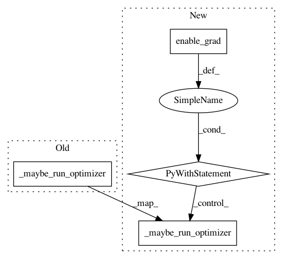

2a548989f90026395d3d47ccf15ac331728c64bf,ml/rl/training/sac_trainer.py,SACTrainer,train,#SACTrainer#Any#,134
Before Change
// Do this in 2 steps so we can log histogram of actor loss
actor_loss_mean = actor_loss.mean()
actor_loss_mean.backward()
self._maybe_run_optimizer(
self.actor_network_optimizer, self.minibatches_per_step
)
//
// Lastly, if applicable, optimize value network; minimizing MSE between
// V(s) & E_a~pi(s) [ Q(s,a) - log(pi(a|s)) ]
After Change
)
)
with torch.enable_grad():
//
// First, optimize Q networks; minimizing MSE between
// Q(s, a) & r + discount * V"(next_s)
//
current_state_action = rlt.StateAction(state=state, action=action)
q1_value = self.q1_network(current_state_action).q_value
if self.q2_network:
q2_value = self.q2_network(current_state_action).q_value
actor_output = self.actor_network(rlt.StateInput(state=state))
// Optimize Alpha
if self.alpha_optimizer is not None:
alpha_loss = -(
self.log_alpha
* (actor_output.log_prob + self.target_entropy).detach()
).mean()
self.alpha_optimizer.zero_grad()
alpha_loss.backward()
self.alpha_optimizer.step()
self.entropy_temperature = self.log_alpha.exp()
with torch.no_grad():
if self.value_network is not None:
next_state_value = self.value_network_target(
learning_input.next_state.float_features
)
else:
next_state_actor_output = self.actor_network(
rlt.StateInput(state=learning_input.next_state)
)
next_state_actor_action = rlt.StateAction(
state=learning_input.next_state,
action=rlt.FeatureVector(
float_features=next_state_actor_output.action
),
)
next_state_value = self.q1_network_target(
next_state_actor_action
).q_value
if self.q2_network is not None:
target_q2_value = self.q2_network_target(
next_state_actor_action
).q_value
next_state_value = torch.min(next_state_value, target_q2_value)
log_prob_a = self.actor_network.get_log_prob(
learning_input.next_state, next_state_actor_output.action
)
log_prob_a = log_prob_a.clamp(-20.0, 20.0)
next_state_value -= self.entropy_temperature * log_prob_a
target_q_value = (
reward + discount * next_state_value * not_done_mask.float()
)
q1_loss = F.mse_loss(q1_value, target_q_value)
q1_loss.backward()
self._maybe_run_optimizer(
self.q1_network_optimizer, self.minibatches_per_step
)
if self.q2_network:
q2_loss = F.mse_loss(q2_value, target_q_value)
q2_loss.backward()
self._maybe_run_optimizer(
self.q2_network_optimizer, self.minibatches_per_step
)
//
// Second, optimize the actor; minimizing KL-divergence between action propensity
// & softmax of value. Due to reparameterization trick, it ends up being
// log_prob(actor_action) - Q(s, actor_action)
//
state_actor_action = rlt.StateAction(
state=state,
action=rlt.FeatureVector(float_features=actor_output.action),
)
q1_actor_value = self.q1_network(state_actor_action).q_value
min_q_actor_value = q1_actor_value
if self.q2_network:
q2_actor_value = self.q2_network(state_actor_action).q_value
min_q_actor_value = torch.min(q1_actor_value, q2_actor_value)
actor_loss = (
self.entropy_temperature * actor_output.log_prob - min_q_actor_value
)
// Do this in 2 steps so we can log histogram of actor loss
actor_loss_mean = actor_loss.mean()
actor_loss_mean.backward()
self._maybe_run_optimizer(
self.actor_network_optimizer, self.minibatches_per_step
)
//
// Lastly, if applicable, optimize value network; minimizing MSE between
// V(s) & E_a~pi(s) [ Q(s,a) - log(pi(a|s)) ]
//
if self.value_network is not None:
state_value = self.value_network(state.float_features)
if self.logged_action_uniform_prior:
log_prob_a = torch.zeros_like(min_q_actor_value)
target_value = min_q_actor_value
else:
with torch.no_grad():
log_prob_a = actor_output.log_prob
log_prob_a = log_prob_a.clamp(-20.0, 20.0)
target_value = (
min_q_actor_value - self.entropy_temperature * log_prob_a
)
value_loss = F.mse_loss(state_value, target_value.detach())
value_loss.backward()
self._maybe_run_optimizer(
self.value_network_optimizer, self.minibatches_per_step
)
// Use the soft update rule to update the target networks
if self.value_network is not None:
self._maybe_soft_update(
self.value_network,
self.value_network_target,
In pattern: SUPERPATTERN
Frequency: 3
Non-data size: 4
Instances
Project Name: facebookresearch/Horizon
Commit Name: 2a548989f90026395d3d47ccf15ac331728c64bf
Time: 2019-06-22
Author: jjg@fb.com
File Name: ml/rl/training/sac_trainer.py
Class Name: SACTrainer
Method Name: train
Project Name: facebookresearch/Horizon
Commit Name: 2a548989f90026395d3d47ccf15ac331728c64bf
Time: 2019-06-22
Author: jjg@fb.com
File Name: ml/rl/training/parametric_dqn_trainer.py
Class Name: ParametricDQNTrainer
Method Name: train
Project Name: facebookresearch/Horizon
Commit Name: 2a548989f90026395d3d47ccf15ac331728c64bf
Time: 2019-06-22
Author: jjg@fb.com
File Name: ml/rl/training/dqn_trainer.py
Class Name: DQNTrainer
Method Name: calculate_cpes